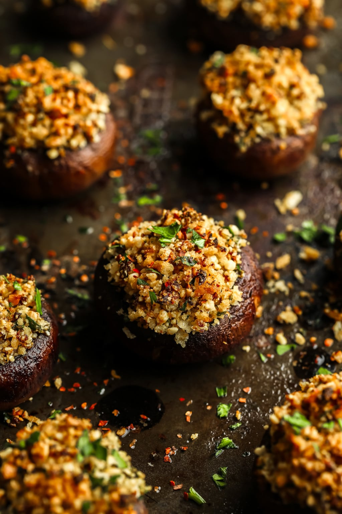

Stuffed Mushrooms

A must-have appetizer that's great for parties and special occasions. They're delicious and well-seasoned! Filled with a cheesy breadcrumb, herbs and parmesan, this vegan dish will delight your guests.
Ingredients
- 16 ounces cremini mushrooms or white button
- 2 tablespoons olive oil
- 1/4 cup diced small onion
- 3 cloves garlic minced
- 1/3 cup raw cashews or hemp seeds, sunflower seeds for nut free
- 1/4 cup nutritional yeast
- 1/4 teaspoon garlic powder
- 1 tablespoon chopped fresh Italian parsley
- 1/4 teaspoon dried thyme
- 1/2 teaspoon salt
- 1/2 cup panko breadcrumbs
- pinch of red chili flakes
Steps
- Preheat the oven to 400 degrees F and grease a large baking pan with olive oil.
- Carefully remove the stems from the mushrooms. Set the mushroom caps aside and finely chop the stems.
- In a medium-sized pan, warm the olive oil over medium heat. Add the onions and chopped mushroom stems and sauté for about 5 minutes, until tender. Add the garlic and cook for 1 more minute. Remove mixture from heat.
- In a food processor or high powered blender, add the cashews, nutritional yeast, garlic powder, parsley, thyme and salt. Pulse until a crumbly consistency is reached. Do not pulse for too long or it will turn into a paste.
- In a medium-sized bowl, add the cashew mixture, along with the panko breadcrumbs, red chili flakes and cooked onions/mushroom stems/garlic. Stir everything together to combine.
- Spoon the filling into the mushroom caps and place on the prepared baking pan. Spray the stuffed mushrooms with olive oil (or drizzle a little on each one).
- Bake in the oven for 20-25 minutes, until the tops are golden. Serve immediately and enjoy.
Source: Nora Cooks
Home